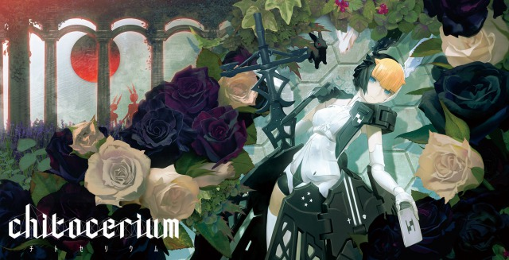
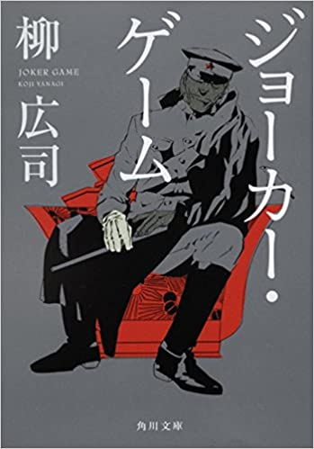

『chitocerium』とは浅井真紀×huke×GOOD SMILE COMPANYが送るプラスチックモデルシリーズである。
チトセリウム【chitocerium】公式twitter

『ジョーカー・ゲーム』 (JOKER GAME) は、柳広司による日本の短編ミステリー・スパイ小説。または、下記する続編を含めたシリーズの総称である｡『D機関シリーズ』とも呼ばれている。
1作目・ジョーカー・ゲーム 2作目・ダブル・ジョーカー
3作目・パラダイス・ロスト 4作目・ラスト・ワルツ
レポート課題4